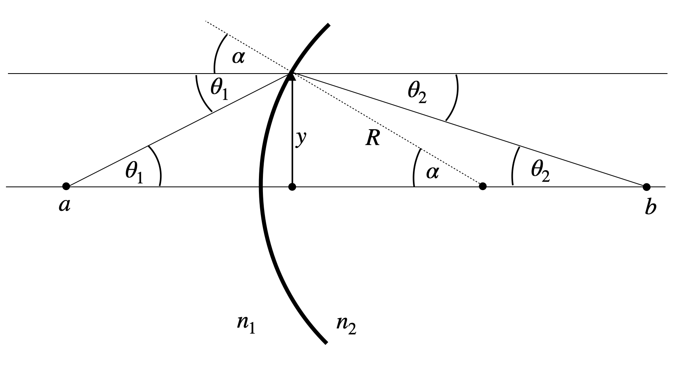
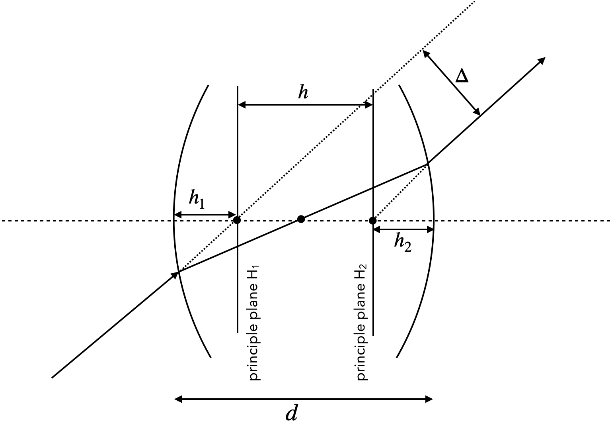

This page was generated from `/home/lectures/exp3/source/notebooks/L3/Optical Elements III.ipynb`_.

Optical Elements Part III¶
[5]:
## just for plotting later
import pandas as pd
import numpy as np
import matplotlib.pyplot as plt
from spectrumRGB import wavelength_to_rgb
%matplotlib inline
%config InlineBackend.figure_format = 'retina'
plt.rcParams.update({'font.size': 12,
'axes.titlesize': 18,
'axes.labelsize': 16,
'axes.labelpad': 14,
'lines.linewidth': 1,
'lines.markersize': 10,
'xtick.labelsize' : 16,
'ytick.labelsize' : 16,
'xtick.top' : True,
'xtick.direction' : 'in',
'ytick.right' : True,
'ytick.direction' : 'in',})
Lenses¶
The most important optical elements are lenses, which come in many different flavors. They consist of curved surfaces, which most commonly have the shape of a part of a spherical cap. It is, therefore, useful to have a look at the refraction at spherical surfaces.
Refraction at spherical surfaces¶
For our calculations of the refraction at spherical surfaces, we consider the sketch below.
 |
|---|
Fig.: Refraction at a curved surface. |
What we would like to calculate is the distance \(b\) and the angle \(\theta_2\) at which a ray crosses the optical axis if it originated at a distance \(a\) under an angle \(\theta_1\) on the left side. This will help us to obtain an imaging equation for a lens. For the above geometry we may write down Snell’s law as
In addition, we may write down a number of definitions for the angular functions, which will turn out to be useful.
\(\sin(\alpha)=\frac{y}{R}\)
\(\tan(\theta_1)=\frac{y}{a}\)
\(\tan(\theta_2)=\frac{y}{b}\)
To find now an imaging equation, we do an approximation, which is very common in optics. This is the so called paraxial approximation. It assumes that all angles involved in the calculation are small, such that we can resort to the first order approaximation of the angular functions. At the end, this will yield a linearization of these function. For small angles, we obtain
\(\sin(\theta)\approx \theta\)
\(\cos(\theta)\approx 1\)
\(\tan(\theta)=\frac{\sin(\theta)}{\cos(\theta)}\approx \theta\)
With the help of these approximations we can write Snell’s law for the curved surface as
With some slight transformation which you will find in the video of the online lecture we obtain, therefore,
which is a purely linear equation in \(y\) and \(\theta_1\).
Let us now assume light is coming form a point a distance \(y\) from the optical axis and there is a ray traveling parallel to the optical axis hitting the spherical surface at \(y\), while a second ray is incident for \(y=0\).
Fig.: Image formation at a curved surface. |
We may apply our obatined formula for the two cases.
\(\theta_1=0\):
and thus
\(y=0\):
Combining both equations yields
where we define the new quantity focal length which only depends on the properties of the curved surface
Imaging Equation Spherical Refracting Surface
The sum of the inverse object and image distances equals the inverse focal length of the spherical refracting surface
where the focal length of the refracting surface is given by
in the paraxial approximation.
Refraction with two spherical surfaces¶
In our previous calculation we have found a linear relation between the incident angle \(\theta_1\) with the optical axis, the incident height of the ray \(y\) and the outgoing angle \(\theta_2\):
Remember that the refractive index \(n_1\) is the one of the medium from where we enter the lens with a refractive index \(n_2\). The radius of the first spherical surface is \(R_1\). For a lens as displayed below, we have to consider now a second refraction, where we take the outgoing angle of the first refraction as the incident angle and we have to reverse the use of the refractive indices. The radius of the second spherical surface is now \(R_2\) and its value will turn out to be negative as the curvature with respect to the optical axis has reversed.
|
|---|
Fig.: Refraction on two spherical surfaces. |

When applying our equation a second time, we also need the second height \(y^{\prime}\) for the calculation. For a thin lens, we now have a thickness \(d<<R_1, R_2\) much smaller than the radii of the spherical surfaces. From that we may assume that \(y\approx y^{\prime}\), which means that the displacement in height of paraxial rays inside the lens can be neglected. If this is the case, we may just assume, that all refracting actions happening on a plane in the center of a lens, which is drawn above as the dashed line. This plane is the so-called principle plane of the thin lens and all image construction can be reduced to the plane.
The result of the above calculation is leading to the imaging equation for the thin lens.
Imaging Equation Thin Lens
The sum of the inverse object and image distances equals the inverse focal length of the thin lens
where the focal length of the thin lens is given by
in the paraxial approximation.
The equation for the focal length has some important consequence. It says that if the difference of the refractive indices inside (\(n_2\)) and outside \(n_1\) get smaller, the focal length becomes larger and finally infinity. This can be nicely observed by placing a lens outside and inside a water filled basin as shown below.
|
|---|
Fig.: Focusing of parallel rays by a lens in air (\(n_1=1\), left) and in water (\(n_1=1.36\), right). The images clearly show the change in focal length between the two situations. |


Image Construction¶
Images of objects can be now constructed if we refer to rays which do not emerge from a position on the optical axis only. In this case, we consider three different rays (two are actually enough). If we use as in the case of a concave mirror a central and a parallel ray, we will find a position where all rays cross on the other side. The conversion of the rays is exactly the same as in the case of a spherical mirror. The relation between the position of the object and the image along the optical axis is described by the imaging equation.
|
|---|
Fig.: Image construction on a thin lens. |

Similar to the concave mirror, we may now also find out the image size or the magnification of the lens.
Magnification of a Lens
The magnification is given by
where the negative sign is the result of the reverse orientation of the real images created by a lens.
According to our previous consideration \(M<0\) corresponds to a reversed image, while it is upright as the object for \(M>0\). We, therefore, easily see the following:
for \(a<f\) the image is upright and magnified (image is virtual however)
for \(a>f\) the image is always reversed (image is real)
for \(2f>a>f\) the image is magnified
for \(a>2f\) the image is shrinked
for \(a=f\) the image appears at infinity with \(M=\infty\)
The image below shows the construction of images in 4 of the above cases for a bi-convex lens including the gerenation of a virtual image.
|
|---|
Fig.: Image construction on a biconvex lens with a parallel and a central ray for different object distances. |

Thick lens¶
For a thin lens, the displacement of the beam in height (\(y,y^{\prime}\)) due to the thickness has been neglected. That means that we can reduce all refracting action of the lens to a single plane, which we call a principle plane. This approximation is (independent of the paraxial approximation) not anymore true for lenses if the displacement \(\Delta\) of the ray as in the image below cannot be neglected. Such lenses are called thick lenses and they do not have a single principle plane anymore. In fact, the principle plane splits up into two principle planes at a distance \(h\).
 |
|---|
Fig.: Thick lens principle planes. |
As indicated in the sketch above, an incident ray which is not deflected can be extended to its intersection with the optical axis at a point, which is a distance \(h_1\) behind the lens surface. This is the location for the first principle plane. The position of the second principle plane at a distance \(h_2\) before the back surface is found for by reversing the ray path. According to that, both principle planes have a distance \(h=d-h_1+h_2\) (mind the sign of the \(h\)). Using some mathematical effort, one can show that the same imaging equation as for a thins lens can be used with a new definition of the focal length and taking into account that object and image distances refer to their principle planes.
Imaging Equation Thick Lens
The sum of the inverse object and image distances to the principle planes (\(H_1,H_2\)) equals the inverse focal length of the thin lens
where the inverse focal length of the thick lens is given by
in the paraxial approximation.
The location of the two principle planes are found to be
As compared to the construction of an image on a thin lens, we now have to consider some pecularities for the thick lens. An incident parallel ray, which turns into a focal ray is now refracted at the second principle plane. The reverse must, therefore, be true for an incident focal ray. This ray is refracted on the first principle plane. The central ray is deflected on both principle planes. It is incident under a certain angle at the first principle plane and outgoing with the same principle angle to the second principle plane. The sketch below summarizes these issues for a thick lens.
Fig.: Thick lens image construction. |
Lens types¶
Depending on the radii of curvature and their sign, one can now construct different types of lenses, that are used in many applications. Modern microscopy lenses, for example, contain sometimes up to 20 different lenses with
|
|---|
Fig.: Different lens types. |

|
|---|
Fig.: Focusing behavior of a few different lens types. |